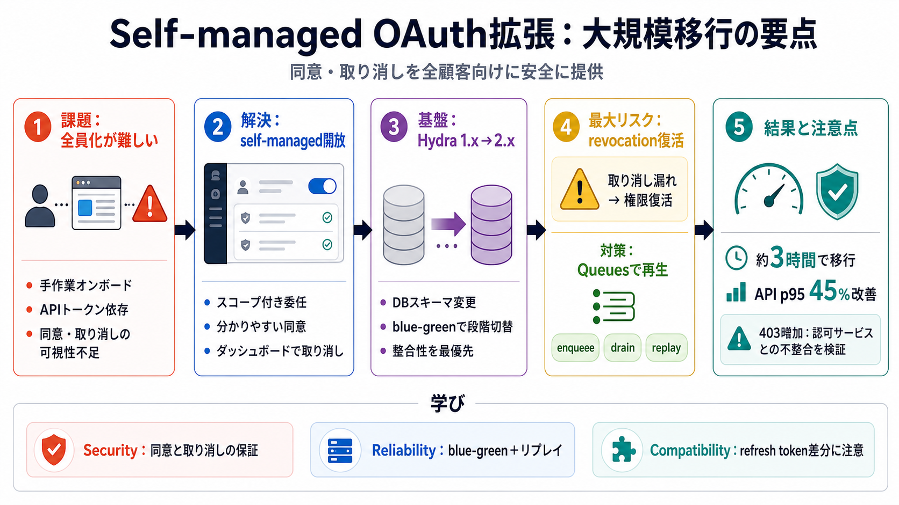

Unlocking the Cloudflare app ecosystem with OAuth for all
## [The Cloudflare Blog](https://blog.cloudflare.com/). [AI](https://blog.cloudflare.com/tag/ai/). [Developers](https://…

CloudflareのOAuthを、従来の一部連携から「すべての顧客が自分でOAuthクライアントを管理できる形（self-managed）」へ拡張した取り組みです。
OAuthは「どのアプリが・どの範囲を・どう許可するか」を管理できる一方、同意（consent）や取り消し（revocation）の安全設計が要になります。
self-managed OAuthを全顧客向けに開放し、標準フローでスコープ付きの委任同意、分かりやすい同意、容易な取り消しを実現します。
Cloudflareが内部で利用するOAuthエンジン（Hydra）を大規模アップグレードし、1.x→2.xの移行を安全に成立させました。
段階的アップグレード（1.x→評価→2.x）とblue-green戦略で、本番DBと新バージョンを段階的に切替しました。
移行中にrevocationが失われると、ユーザーが拒否したはずの権限が“復活”し得て、信頼性に直結する重大事故になります。
Cloudflare Queuesを使い、取り消しイベントをキューイングして切替後にリプレイする設計で、取り消し漏れを防ぎます。
1.x移行後にrefresh tokenエラーが増え、refreshトークン再利用が鎖全体を無効化するように厳格化された点が原因とされています。
2.x移行は本番で約3時間、完了後はOAuthトラフィックが安定し、API p95が45%改善などの指標向上が報告されています。
切替後に認可サービス側のデータクリーンアップが過剰に動作し、有効セッションが無効扱いになって403が増加しました。
self-managed OAuthは「可視化（同意）＋制御（取り消し）」を前に進める一方、大規模移行ではrevocation/refresh/整合性が最大論点になります。
本デッキは、ユーザー提供テキスト（概要・要点・FAQ・所感）に基づき、主要な主張・根拠・リスク・対策を圧縮して整理したものです。
## [The Cloudflare Blog](https://blog.cloudflare.com/). [AI](https://blog.cloudflare.com/tag/ai/). [Developers](https://…
## Post. Self-Managed OAuth is now available to all developers on Cloudflare. Here's how we executed a zero-downtime mig…
We highly recommend to review this guide, make necessary changes and move to 2.x branch, as further 1.x releases are unl…
We read every piece of feedback, and take your input very seriously. The intent of this document is to make migration of…
OAuth 1.0 will be deprecated and discontinued on July 1, 2026. All integrations must migrate to OAuth 2.0 before this da…